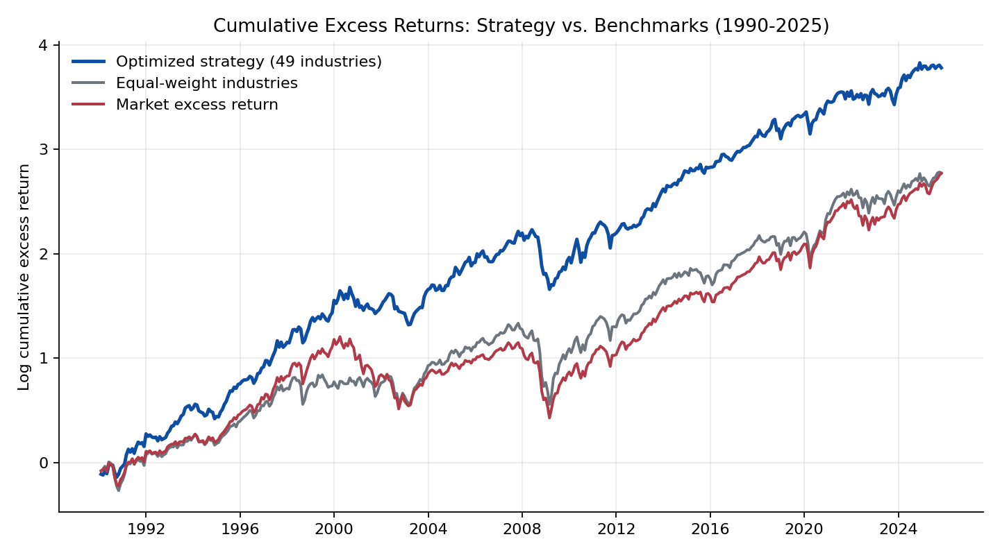
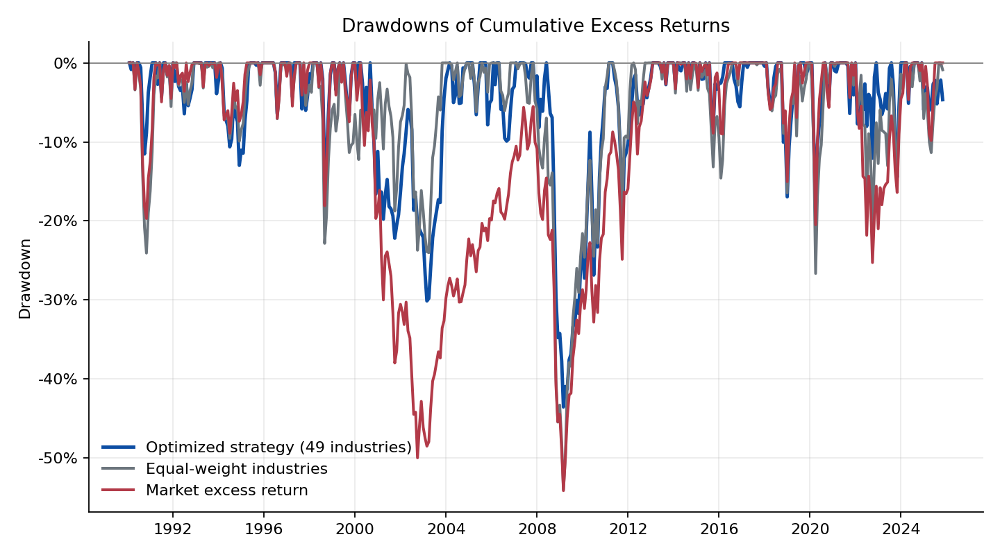
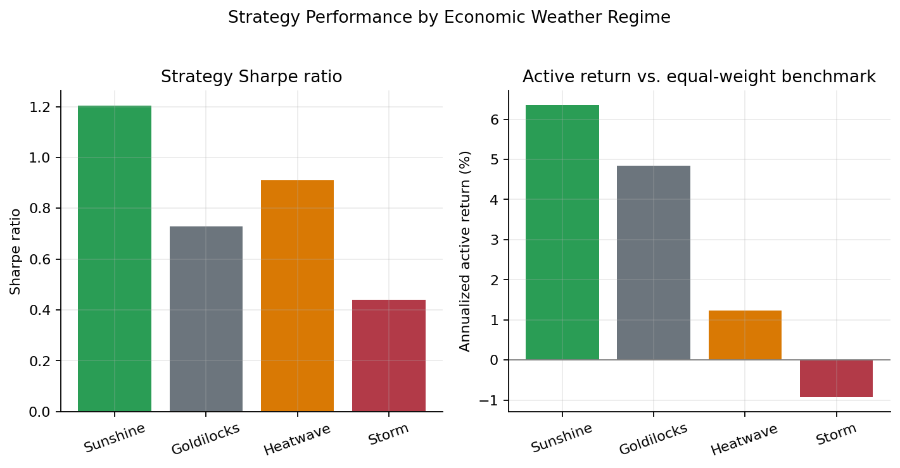

Economic Weather-Based Industry Rotation Portfolio
As the final group project for MGMTMFE 431 Quantitative Asset Management at UCLA Anderson, this project designs and backtests a monthly industry-rotation strategy on the Ken French 49 Industry Portfolios. The core idea is to treat industries as economic habitats: groups of firms that respond differently to the macro weather — the state of growth, inflation, and the yield curve. We combine an eight-factor risk model, an industry momentum signal, and a macro regime classification (the Economic Weather overlay) inside a constrained benchmark-relative optimizer, and backtest the result out-of-sample from January 1990 through October 2025.
Strategy: factor model and expected returns
At each month-end \(t\), the strategy uses the prior 120 months of data to estimate, for every industry \(i\), an augmented factor model on an eight-factor set \(f_\tau\) — the Fama-French five factors (Mkt-RF, SMB, HML, RMW, CMA), Ken French Momentum, and the AQR Quality Minus Junk and Betting Against Beta factors:
\[ r_{i,\tau}^{e} = \alpha_i + \beta_i' f_\tau + \epsilon_{i,\tau}. \]
The expected excess return that feeds the optimizer combines four ingredients:
\[ \hat{\mu}_{i,t} = \tilde{\alpha}_{i,t} + \hat{\beta}_{i,t}'\tilde{f}_t + 0.012\, z(\text{MOM}_{i,t}) + \omega_{i,t}^{\text{weather}}. \]
Here \(\tilde{\alpha}_{i,t}\) is the industry’s factor-model intercept after cross-sectional shrinkage, so a handful of noisy outlier alphas can’t dominate the ranking. \(\tilde{f}_t\) is a forecast of next month’s factor premia, blending historical factor means with ridge regressions on lagged FRED macro variables — the term spread, unemployment, industrial production growth, and inflation. \(\text{MOM}_{i,t}\) is the industry’s 12-month return skipping the most recent month, entered as a cross-sectional z-score. The last term, \(\omega_{i,t}^{\text{weather}}\), is the Economic Weather overlay described next.
The economic weather overlay
The distinguishing feature of the project is the weather classification, which uses only information available at time \(t\) — no look-ahead — to bucket every month into one of four regimes:
| Weather | Macro condition | Industries favored |
|---|---|---|
Sunshine |
Strong industrial production growth, stable labor market | Cyclicals, technology, household-beta names |
Goldilocks |
No extreme macro pressure | Networks, household beta, selected cyclicals |
Heatwave |
Inflation above its rolling median and rising short rates | Extractors, utilities, inflation-sensitive industries |
Storm |
Inverted yield curve or rising unemployment | Defensive shelter industries |
Each regime feeds the optimizer in three ways: through the return overlay \(\omega^{\text{weather}}\) itself, an economic prior over which industries should outperform; through the active weight caps \(c_{i,t}\) (24% for favored industries, 20% for neutral ones, 14% for disfavored ones); and through the risk-aversion parameter \(\gamma_t\) — 0.90 in sunshine, 0.97 in goldilocks, 1.03 in heatwave, and 1.15 in storms. The strategy therefore takes more active risk when the macro backdrop is supportive and pulls back when recession risk rises.
Portfolio construction
Given \(\hat{\mu}_t\) and a factor-model covariance matrix \(\hat{\Sigma}_t = \hat{B}_t \hat{\Sigma}_{f,t}\hat{B}_t' + \hat{D}_t\) — with a small shrinkage toward a diagonal target for numerical stability — the strategy solves a benchmark-relative active mean-variance problem against the equal-weight industry benchmark \(b\):
\[ \max_w \;\; w'\hat{\mu}_t - \frac{\gamma_t}{2}(w-b)'\hat{\Sigma}_t(w-b) \quad \text{s.t.} \quad \sum_i w_i = 1, \;\; 0 \le w_i \le c_{i,t}. \]
The optimizer also scans a grid of risk-aversion levels and keeps the combination with the best ex-ante Sharpe ratio / information ratio trade-off.
Backtest results
The optimized 49-industry strategy earns an annualized excess return of 11.75% with 15.20% volatility, for a Sharpe ratio of 0.77 — comfortably ahead of both the equal-weight industry benchmark (0.57) and the market excess return (0.59) over the same 1990-2025 sample.

The chart above plots log cumulative excess returns. The strategy’s edge is not concentrated in a single episode: it compounds at roughly the same slope as the benchmarks during calm periods but recovers faster after the major drawdowns, most visibly after the dot-com bust and the 2008 financial crisis.
| Portfolio | Ann. excess return | Ann. volatility | Sharpe ratio | Max drawdown |
|---|---|---|---|---|
| Optimized strategy (49 industries) | 11.75% | 15.20% | 0.77 | -43.5% |
| Equal-weight 49 industries | 9.06% | 16.04% | 0.57 | -54.0% |
| Market excess return | 8.93% | 15.24% | 0.59 | -54.1% |
| 10-industry robustness check | 10.56% | 14.36% | 0.74 | -39.8% |

The drawdown chart makes the risk-control case clearer than the return chart alone: the strategy’s worst drawdown (-43.5%) is roughly ten percentage points shallower than either benchmark (-54%), even though its market beta is close to one (0.98). Most of that gap opens up during 2000-2003 and 2008-2009, periods when the weather overlay spends more time in Storm, tightening the caps on cyclical and balance-sheet-sensitive industries.
Reading the weather

Splitting the sample by regime shows that the classification is doing real work rather than adding noise. The strategy’s Sharpe ratio is highest in Sunshine (1.20) and Heatwave (0.91), moderate in Goldilocks (0.73), and lowest in Storm (0.44) — and the active return versus the equal-weight benchmark follows the same ordering, turning slightly negative (-0.9% annualized) in storms. This is economically sensible: storm months combine an inverted yield curve with rising unemployment, exactly the environment where cross-sectional equity bets are hardest to time, so the strategy’s relative edge shrinks even as its absolute defensiveness — lower caps on cyclicals — helps contain the drawdown.
Robustness, costs, and limits
A few checks temper the headline number. The strategy’s Fama-French six-factor alpha is small and statistically insignificant (-0.18% annualized, t-stat -0.17) with a market beta of 0.98, so the gain is better read as disciplined timing and allocation across factor, momentum, quality, and defensive exposures than as a standalone pricing anomaly. Average one-way turnover is 27.9% per month; even at 25 bps of one-way transaction costs, the net Sharpe ratio only falls to 0.72. The result is also not free of regime dependence across calendar time: the strategy posts Sharpe ratios of 1.16 (1990s) and 1.03 (2010s) but only 0.34 (2000s) and 0.54 (2020-2025) — strong on average, but not in every decade. Finally, repeating the whole construction on the broader Ken French 10-industry set gives a Sharpe ratio of 0.74 with lower volatility and a smaller drawdown, which suggests the core idea is not an artifact of the finer 49-industry split.
The full derivations, factor regressions, and turnover/cost tables are in the report above; the slides walk through the same material in presentation form.